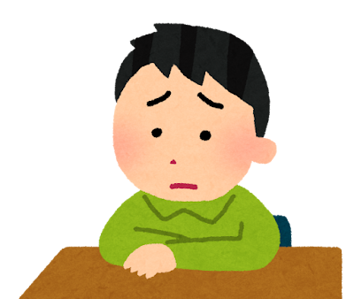

びみょう
微妙
애매하다, 찝찝하다
その返事はちょっと微妙だな。
그 대답은 좀 애매한데.
その返事はちょっと微妙だな。
그 대답은 좀 애매한데.
今の目、完全に本気った。
방금 그 눈빛, 완전 진심이었어.
その反応、意外だった。
그 반응, 예상 밖이야.
そのリアクション草すぎる。
그 리액션이 너무 웃겨.
この世界の設定、思ったより深いな。
이 세계 설정, 생각보다 깊네.